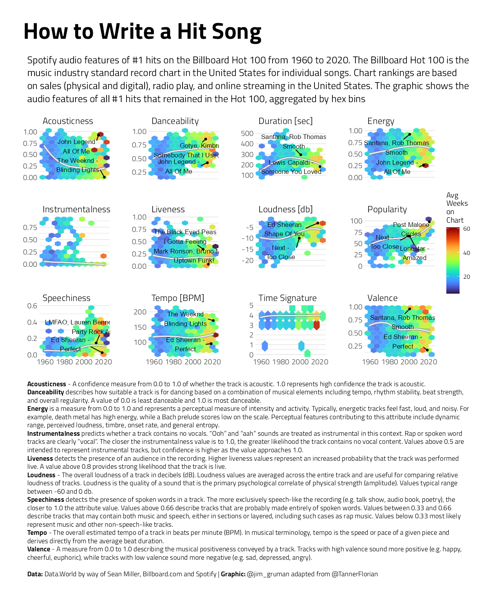

Last updated: 2021-09-15
Checks: 7 0
Knit directory: myTidyTuesday/
This reproducible R Markdown analysis was created with workflowr (version 1.6.2). The Checks tab describes the reproducibility checks that were applied when the results were created. The Past versions tab lists the development history.
Great! Since the R Markdown file has been committed to the Git repository, you know the exact version of the code that produced these results.
Great job! The global environment was empty. Objects defined in the global environment can affect the analysis in your R Markdown file in unknown ways. For reproduciblity it’s best to always run the code in an empty environment.
The command set.seed(20210907) was run prior to running the code in the R Markdown file. Setting a seed ensures that any results that rely on randomness, e.g. subsampling or permutations, are reproducible.
Great job! Recording the operating system, R version, and package versions is critical for reproducibility.
Nice! There were no cached chunks for this analysis, so you can be confident that you successfully produced the results during this run.
Great job! Using relative paths to the files within your workflowr project makes it easier to run your code on other machines.
Great! You are using Git for version control. Tracking code development and connecting the code version to the results is critical for reproducibility.
The results in this page were generated with repository version 60152ce. See the Past versions tab to see a history of the changes made to the R Markdown and HTML files.
Note that you need to be careful to ensure that all relevant files for the analysis have been committed to Git prior to generating the results (you can use wflow_publish or wflow_git_commit). workflowr only checks the R Markdown file, but you know if there are other scripts or data files that it depends on. Below is the status of the Git repository when the results were generated:
Ignored files:
Ignored: .Rhistory
Ignored: .Rproj.user/
Ignored: catboost_info/
Ignored: data/2021-09-08/
Ignored: data/acs_poverty.rds
Ignored: data/fmhpi.rds
Ignored: data/grainstocks.rds
Ignored: data/hike_data.rds
Ignored: data/us_states.rds
Ignored: data/us_states_hexgrid.geojson
Ignored: data/weatherstats_toronto_daily.csv
Untracked files:
Untracked: code/work list batch targets.R
Untracked: figure/
Note that any generated files, e.g. HTML, png, CSS, etc., are not included in this status report because it is ok for generated content to have uncommitted changes.
These are the previous versions of the repository in which changes were made to the R Markdown (analysis/BillboardTop100.Rmd) and HTML (docs/BillboardTop100.html) files. If you’ve configured a remote Git repository (see ?wflow_git_remote), click on the hyperlinks in the table below to view the files as they were in that past version.
| File | Version | Author | Date | Message |
|---|---|---|---|---|
| Rmd | 60152ce | opus1993 | 2021-09-15 | Initial commit |
This week’s #TidyTuesday dataset is on Billboard Hot 100 song data.
Before diving into my own work, I’d like recognize the amazing work of a few others:
tweetrmd::include_tweet("https://twitter.com/issa_madjid/status/1437894988864626693")For this week #TidyTuesday on the songs of Billboard Top 100, I tackled the
— Abdoul Madjid (@issa_madjid) September 14, 2021
Rhythmic evolution of Madonna's songs.
Data from Data World by way of Sean Miller, https://t.co/I6hj3EiV7b and Spotify.
HD Graphic and #RStats code : https://t.co/oR566peb4G pic.twitter.com/Ihvvb7FJiY
tweetrmd::include_tweet("https://twitter.com/TannerFlorian/status/1438116383280095237")🎼🎶I said, oooooh, I'm blinded by this #TidyTuesday graph. 🎶
— Florian Tanner (@TannerFlorian) September 15, 2021
Audio features of hit songs over time. Data from Data World by way of Sean Miller, https://t.co/RsKVK2WwyS and Spotify. Code: https://t.co/oALKLmh4lm#DataVisualization #DataViz #RStats pic.twitter.com/wYUlwhTpmf
Let’s load the data and have a look around.
tt <- tidytuesdayR::tt_load("2021-09-14")
Downloading file 1 of 2: `billboard.csv`
Downloading file 2 of 2: `audio_features.csv`billboard <- tt$billboard
audio_features <- tt$audio_featuresI’m interested in joining the Spotify attributes to the Billboard standings to look for a better understanding of what makes a number one hit song.
`%!in%` <- Negate(`%in%`)
top_hits <- billboard %>%
left_join(audio_features) %>%
filter(
!is.na(loudness), # remove those without audio features
peak_position == 1
) %>%
mutate(spotify_track_duration_sec = round(spotify_track_duration_ms / 1000)) %>%
pivot_longer(
cols = c(
spotify_track_duration_sec,
danceability,
energy,
loudness,
speechiness,
acousticness,
instrumentalness,
liveness,
valence,
tempo,
time_signature,
spotify_track_popularity
),
names_to = "quant_feature",
values_to = "quant_value"
) %>%
mutate(week_id = lubridate::mdy(week_id)) %>%
group_by(song_id) %>%
slice_max(weeks_on_chart, n = 1) %>%
# selecting last instance on charts
mutate(
quant_feature = str_to_title(quant_feature),
quant_feature = case_when(
quant_feature == "Loudness" ~ "Loudness [db]",
quant_feature == "Spotify_track_duration_sec" ~ "Duration [sec]",
quant_feature == "Tempo" ~ "Tempo [BPM]",
quant_feature == "Time_signature" ~ "Time Signature",
quant_feature == "Spotify_track_popularity" ~ "Popularity",
TRUE ~ quant_feature
)
) %>%
ungroup()labels_min <- top_hits %>%
filter(weeks_on_chart > 52) %>%
select(performer, song, week_id, quant_feature, quant_value) %>%
group_by(quant_feature) %>%
slice_min(n = 1, quant_value) %>%
mutate(
label = str_c(performer, " -", "\n", song),
label = str_replace(label, " Featuring ", ", ")
) %>%
filter(quant_feature %!in% c("Time Signature", "Instrumentalness")) %>%
dplyr::distinct()labels_max <- top_hits %>%
filter(weeks_on_chart > 52) %>%
select(performer, song, week_id, quant_feature, quant_value) %>%
group_by(quant_feature) %>%
slice_max(n = 1, quant_value) %>%
mutate(
label = str_c(performer, "\n", song),
label = str_replace(label, " Featuring ", ", ")
) %>%
filter(quant_feature %!in% c("Time Signature", "Instrumentalness")) %>%
dplyr::distinct()labelled <- top_hits %>%
left_join(labels_max %>% bind_rows(labels_min)) %>%
dplyr::distinct()plot_subtitle <- "Spotify audio features of #1 hits on the Billboard Hot 100 from 1960 to 2020. The Billboard Hot 100 is the music industry standard record chart in the United States for individual songs. Chart rankings are based on sales (physical and digital), radio play, and online streaming in the United States. The graphic shows the audio features of all #1 hits that remained in the Hot 100, aggregated by hex bins"
key <- "**Acousticness** - A confidence measure from 0.0 to 1.0 of whether the track is acoustic. 1.0 represents high confidence the track is acoustic.<br>
**Danceability** describes how suitable a track is for dancing based on a combination of musical elements including tempo, rhythm stability, beat strength, and overall regularity. A value of 0.0 is least danceable and 1.0 is most danceable.<br>
**Energy** is a measure from 0.0 to 1.0 and represents a perceptual measure of intensity and activity. Typically, energetic tracks feel fast, loud, and noisy. For example, death metal has high energy, while a Bach prelude scores low on the scale. Perceptual features contributing to this attribute include dynamic range, perceived loudness, timbre, onset rate, and general entropy.<br>
**Instrumentalness** predicts whether a track contains no vocals. “Ooh” and “aah” sounds are treated as instrumental in this context. Rap or spoken word tracks are clearly “vocal”. The closer the instrumentalness value is to 1.0, the greater likelihood the track contains no vocal content. Values above 0.5 are intended to represent instrumental tracks, but confidence is higher as the value approaches 1.0.<br>
**Liveness** detects the presence of an audience in the recording. Higher liveness values represent an increased probability that the track was performed live. A value above 0.8 provides strong likelihood that the track is live.<br>
**Loudness** - The overall loudness of a track in decibels (dB). Loudness values are averaged across the entire track and are useful for comparing relative loudness of tracks. Loudness is the quality of a sound that is the primary psychological correlate of physical strength (amplitude). Values typical range between -60 and 0 db.<br>
**Speechiness** detects the presence of spoken words in a track. The more exclusively speech-like the recording (e.g. talk show, audio book, poetry), the closer to 1.0 the attribute value. Values above 0.66 describe tracks that are probably made entirely of spoken words. Values between 0.33 and 0.66 describe tracks that may contain both music and speech, either in sections or layered, including such cases as rap music. Values below 0.33 most likely represent music and other non-speech-like tracks.<br>
**Tempo** - The overall estimated tempo of a track in beats per minute (BPM). In musical terminology, tempo is the speed or pace of a given piece and derives directly from the average beat duration.<br>
**Valence** - A measure from 0.0 to 1.0 describing the musical positiveness conveyed by a track. Tracks with high valence sound more positive (e.g. happy, cheerful, euphoric), while tracks with low valence sound more negative (e.g. sad, depressed, angry).
<br><br>
**Data:** Data.World by way of Sean Miller, Billboard.com and Spotify | **Graphic:** @jim_gruman adapted from @TannerFlorian"Another take on Tanner’s work, adapted in new colors and aggregated by hex bins to possible improve on the over-plotting problem:
labelled %>%
ggplot() +
stat_summary_hex(
aes(x = week_id, y = quant_value, z = weeks_on_chart),
alpha = 0.9,
bins = 10
) +
geom_smooth(
aes(x = week_id, y = quant_value),
color = "black",
size = 1.2,
se = FALSE,
method = "loess",
formula = "y ~ x"
) +
geom_smooth(aes(x = week_id, y = quant_value),
color = "#e6e6f1",
method = "loess",
formula = "y ~ x"
) +
geom_point(
data = labelled %>% filter(!is.na(label)),
aes(x = week_id, y = quant_value),
size = 1, color = "black"
) +
ggrepel::geom_text_repel(
data = labelled %>% filter(!is.na(label)),
aes(x = week_id, y = quant_value, label = label),
min.segment.length = 0,
seed = 42,
box.padding = 0.5,
color = "black",
bg.r = 0.1,
size = 3,
max.overlaps = 50
) +
facet_wrap(~quant_feature, scales = "free_y") +
theme(
panel.grid.major.x = element_blank(),
panel.grid.minor.x = element_blank(),
axis.title.x = element_blank(),
axis.title.y = element_blank(),
plot.subtitle = element_textbox_simple(
size = 13,
lineheight = 1.3,
padding = margin(5.5, 5.5, 5.5, 5.5),
margin = margin(0, 0, 5.5, 0),
maxheight = NULL
),
plot.title = element_text(size = 30),
plot.caption = element_textbox_simple(
size = 9,
lineheight = 1.2,
padding = margin(5.5, 5.5, 5.5, 5.5),
margin = margin(25, 0, 0, 0),
maxheight = NULL
)
) +
labs(
title = "How to Write a Hit Song",
subtitle = plot_subtitle,
caption = key,
fill = "Avg\nWeeks\non\nChart"
)
sessionInfo()R version 4.1.1 (2021-08-10)
Platform: x86_64-w64-mingw32/x64 (64-bit)
Running under: Windows 10 x64 (build 19043)
Matrix products: default
locale:
[1] LC_COLLATE=English_United States.1252
[2] LC_CTYPE=English_United States.1252
[3] LC_MONETARY=English_United States.1252
[4] LC_NUMERIC=C
[5] LC_TIME=English_United States.1252
attached base packages:
[1] stats graphics grDevices utils datasets methods base
other attached packages:
[1] ggtext_0.1.1 yardstick_0.0.8 workflowsets_0.1.0 workflows_0.2.3
[5] tune_0.1.6 rsample_0.1.0 recipes_0.1.16 parsnip_0.1.7.900
[9] modeldata_0.1.1 infer_1.0.0 dials_0.0.9.9000 scales_1.1.1
[13] broom_0.7.9 tidymodels_0.1.3 forcats_0.5.1 stringr_1.4.0
[17] dplyr_1.0.7 purrr_0.3.4 readr_2.0.1 tidyr_1.1.3
[21] tibble_3.1.4 ggplot2_3.3.5 tidyverse_1.3.1 workflowr_1.6.2
loaded via a namespace (and not attached):
[1] readxl_1.3.1 backports_1.2.1 systemfonts_1.0.2
[4] selectr_0.4-2 plyr_1.8.6 tidytuesdayR_1.0.1
[7] splines_4.1.1 listenv_0.8.0 usethis_2.0.1
[10] digest_0.6.27 foreach_1.5.1 htmltools_0.5.2
[13] viridis_0.6.1 fansi_0.5.0 magrittr_2.0.1
[16] tzdb_0.1.2 globals_0.14.0 modelr_0.1.8
[19] gower_0.2.2 extrafont_0.17 vroom_1.5.4
[22] R.utils_2.10.1 extrafontdb_1.0 hardhat_0.1.6
[25] colorspace_2.0-2 ggrepel_0.9.1 rvest_1.0.1
[28] textshaping_0.3.5 haven_2.4.3 xfun_0.25
[31] hexbin_1.28.2 crayon_1.4.1 jsonlite_1.7.2
[34] survival_3.2-11 iterators_1.0.13 glue_1.4.2
[37] gtable_0.3.0 ipred_0.9-11 R.cache_0.15.0
[40] tweetrmd_0.0.9 Rttf2pt1_1.3.9 future.apply_1.8.1
[43] DBI_1.1.1 Rcpp_1.0.7 viridisLite_0.4.0
[46] gridtext_0.1.4 bit_4.0.4 GPfit_1.0-8
[49] lava_1.6.10 prodlim_2019.11.13 httr_1.4.2
[52] ellipsis_0.3.2 farver_2.1.0 pkgconfig_2.0.3
[55] R.methodsS3_1.8.1 nnet_7.3-16 sass_0.4.0
[58] dbplyr_2.1.1 utf8_1.2.2 here_1.0.1
[61] labeling_0.4.2 tidyselect_1.1.1 rlang_0.4.11
[64] DiceDesign_1.9 later_1.3.0 munsell_0.5.0
[67] cellranger_1.1.0 tools_4.1.1 cachem_1.0.6
[70] cli_3.0.1 generics_0.1.0 evaluate_0.14
[73] fastmap_1.1.0 yaml_2.2.1 ragg_1.1.3
[76] rematch2_2.1.2 bit64_4.0.5 knitr_1.34
[79] fs_1.5.0 nlme_3.1-152 future_1.22.1
[82] whisker_0.4 R.oo_1.24.0 xml2_1.3.2
[85] compiler_4.1.1 rstudioapi_0.13 curl_4.3.2
[88] reprex_2.0.1 lhs_1.1.3 bslib_0.3.0
[91] stringi_1.7.4 highr_0.9 gdtools_0.2.3
[94] hrbrthemes_0.8.0 lattice_0.20-44 Matrix_1.3-4
[97] markdown_1.1 styler_1.5.1 conflicted_1.0.4
[100] vctrs_0.3.8 pillar_1.6.2 lifecycle_1.0.0
[103] furrr_0.2.3 jquerylib_0.1.4 httpuv_1.6.2
[106] R6_2.5.1 promises_1.2.0.1 gridExtra_2.3
[109] parallelly_1.28.1 codetools_0.2-18 MASS_7.3-54
[112] assertthat_0.2.1 rprojroot_2.0.2 withr_2.4.2
[115] mgcv_1.8-36 parallel_4.1.1 hms_1.1.0
[118] grid_4.1.1 rpart_4.1-15 timeDate_3043.102
[121] class_7.3-19 rmarkdown_2.10 git2r_0.28.0
[124] pROC_1.18.0 lubridate_1.7.10